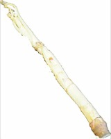

うど（独活）の生産量 都道府県ランキング
全17県の順位と、とれた量
うどが日本でいちばん多くとれるのは栃木県です。467 tで、全国（898 t）の52%を占めます。

| 順位 | 都道府県 | 収穫量 | 全国に占める割合 |
|---|---|---|---|
| 1位 | 栃木県 | 467 t | 52% |
| 2位 | 群馬県 | 219 t | 24% |
| 3位 | 秋田県 | 69 t | 7.7% |
| 4位 | 東京都 | 38 t | 4.2% |
| 5位 | 青森県 | 35 t | 3.9% |
| 6位 | 北海道 | 21 t | 2.3% |
| 7位 | 福島県 | 19 t | 2.1% |
| 8位 | 埼玉県 | 7 t | 0.8% |
| 9位 | 宮城県 | 6 t | 0.7% |
| 10位 | 神奈川県 | 6 t | 0.7% |
| 11位 | 長野県 | 3 t | 0.3% |
| 12位 | 新潟県 | 2 t | 0.2% |
| 13位 | 兵庫県 | 2 t | 0.2% |
| 14位 | 山梨県 | 1 t | 0.1% |
| 15位 | 滋賀県 | 1 t | 0.1% |
| 16位 | 京都府 | 1 t | 0.1% |
| 17位 | 大阪府 | 1 t | 0.1% |
この数字について
- 分類：ウコギ科
- 全国の収穫量：898 t
- この数字が表すもの：収穫量（畑や田でとれた重さ）
- 調査：地域特産野菜生産状況調査 令和6年産
- 17県分を調査（調査していない県は順位に入りません）
うどの生産量について、よくある質問
- うどの生産量が日本一の都道府県はどこですか？
- 栃木県です。地域特産野菜生産状況調査（令和6年産）で467 tでした。
- うどの生産量ランキング2位・3位はどこですか？
- 2位は群馬県（219 t）、3位は秋田県（69 t）です。
- うどの生産量ランキング4位・5位はどこですか？
- 4位は東京都（38 t）、5位は青森県（35 t）です。うどの全17県の順位は上の表のとおりです。
- うどの全国の生産量はどれくらいですか？
- 898 t（令和6年産）です。